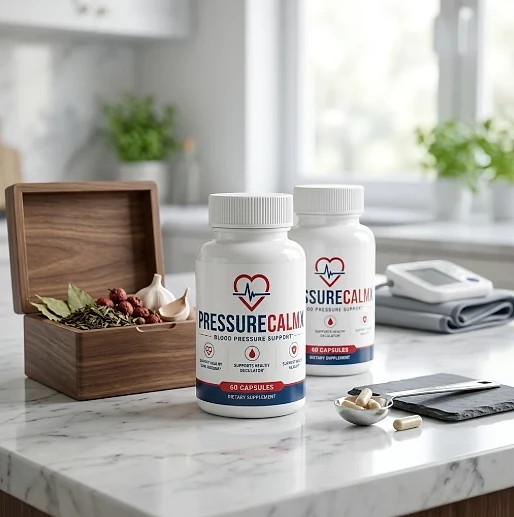
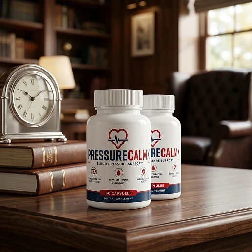
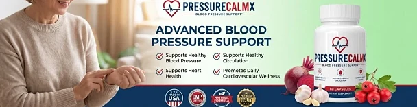

What Is PressureCalmX And How Does It Work?
PressureCalmX is a dietary supplement in capsule form designed to support healthy blood pressure levels already within the normal range, circulation, and heart health for adults who want to look after their cardiovascular wellness as the years go by through a natural, dependable approach — without complicated routines or temporary quick fixes.
It comes as a bottle of 60 capsules, and its label carries the description “Blood Pressure Support” together with three statements: supports healthy blood pressure, supports healthy circulation, and supports heart health, positioning it as daily nutritional support for the body's natural balance.
The official PressureCalmX website is brief: the page reached through the official link shows the bottle and the available packages, and the remaining pages cover terms, privacy, contact, refunds, shipping, and a disclaimer. It does not publish a text explanation of how the formula works, so a careful buyer should rely on the label that comes on the bottle.
Rather than acting as a short-lived artificial fix, a supplement in this category is meant to offer nutritional support for the cardiovascular system, working gradually alongside daily routines to help maintain healthy circulation, steady energy, and long-term wellness.
With consistent daily use, formulas of this kind are intended to complement the habits that matter most for the heart — a balanced diet with less salt, regular physical activity, good sleep, and regular check-ups — and never to replace them.
From a practical standpoint, PressureCalmX is a daily cardiovascular support capsule designed to support wellness from within — helping you stay active, attentive, and in control of your health.
Sold through BuyGoods, an established online retailer, and backed by a 60-day money-back guarantee, according to the official website, PressureCalmX is designed for regular daily use by those seeking a natural, non-prescription way to support cardiovascular wellness.
PressureCalmX Ingredients
The official PressureCalmX website does not publish the product's ingredient list or its Supplement Facts panel, so the complete formula and the amount of each component are found only on the label printed on the bottle. What can be confirmed from the official product images is the following:
Format: capsules, with 60 capsules in each bottle.
Category: dietary supplement, described on the label as “Blood Pressure Support”.
Label statements: supports healthy blood pressure, supports healthy circulation, and supports heart health.
Because the ingredients are not disclosed online, this review does not list or describe them, and it would not be responsible to guess. Supplements in this category often combine plant extracts, amino acids, vitamins, and minerals, and some of those can interact with medicines, which is exactly why the label matters. Before taking the first capsule, read the Supplement Facts panel on your bottle, check it for anything you are allergic to, and show it to your doctor or pharmacist if you take any medication.
PressureCalmX is designed for daily use, offering a natural, non-prescription approach to supporting cardiovascular wellness, and anyone who wants the full ingredient list before ordering can request it from customer support.
PressureCalmX Side Effects
PressureCalmX is presented as a supplement for adults of different ages and lifestyles who are looking for a natural and balanced approach to cardiovascular wellness, especially those who prefer an easy daily capsule routine to support circulation, heart health, and well-being without resorting to risky solutions with severe side effects.
The official website states that its statements have not been evaluated by the Food and Drug Administration and that the product is not intended to diagnose, treat, cure, or prevent any disease. It does not list specific side effects, and, as noted above, it does not publish the ingredients.
That makes caution especially important in this category. High blood pressure is a medical condition that needs diagnosis and follow-up, and a supplement must never replace, or lead you to stop or reduce, a medicine your doctor prescribed. Anyone who takes blood pressure medication, blood thinners, or heart medication should show the label to a doctor before using any product of this kind, and should stop and seek medical advice in case of dizziness, fainting, palpitations, or any unusual reaction. Individual results may vary.
As a general rule for dietary supplements, pregnant or nursing mothers, people under the age of 18, and individuals with a known medical condition should consult a physician before use, and the cautions printed on the bottle should always be followed, ensuring the product fits safely within your personal wellness plan.
PressureCalmX Dosage
The recommended PressureCalmX dosage is the one printed in the directions on the bottle: the official website does not publish the suggested use in text, so the label is the reference to follow. Each bottle contains 60 capsules, a format that is easy to fit into a daily routine, with no powders to mix and nothing to measure.
The sensible approach is to read the directions on your bottle before the first capsule and take PressureCalmX exactly as instructed there, with a glass of water, at the same time each day, or as directed by your healthcare professional, which allows the ingredients to work consistently.
For best results, consistency is key. Nutritional support for the cardiovascular system builds gradually, which is why people who use supplements of this kind usually make them part of an ongoing wellness routine rather than expecting changes in a few days.
There is no need for complex schedules or multi-step routines. A simple daily capsule routine is designed to complement, not replace, a balanced diet, regular exercise, and medical follow-up. As with any supplement, keep the bottle closed, in a cool, dry place, and out of the reach of children.
As with any dietary supplement, it's important not to exceed the amount indicated on the label, and if your bottle arrives without clear directions, contact customer support before using it. PressureCalmX works best when used regularly, combined with proper hydration, balanced nutrition, and healthy daily habits.
PressureCalmX – Refund Policy
You can order PressureCalmX with confidence, knowing that every purchase is protected by a 60-day, 100% money-back guarantee. This allows you to try the formula and decide if it delivers the support you expect.
According to the refund policy on the official website, if for any reason you are dissatisfied at any time during the first 60 days after your purchase, you can reach out to the Customer Support Team to start a refund request. The policy asks customers not to ship products back without contacting support first, so the return can be tracked and processed correctly.
How the refund process works: If you decide PressureCalmX is not right for you, contact support to request your return. The team replies with the authorized warehouse return address and the shipping instructions, and you then send any unused or empty bottles back to that facility. The customer is responsible for the return shipping costs.
Customer Support Contact Information: the contact page of the official website lists phone support at +1 (720) 619-8477, from 7 AM to 9 PM, seven days a week. At the time of this review the page did not display a support email address, so the phone line and the order confirmation message are the channels to use.
Refund Processing Time: Once your refund is processed, you receive a confirmation email. It may take 5 to 7 business days to appear on a credit card statement and 5 to 10 business days on a debit card, depending on your bank.
This refund policy is designed to give customers a clear and transparent experience when trying PressureCalmX.
PressureCalmX – Where To Buy
PressureCalmX is sold through its official website, so if you decide to try it, it's important to be careful about where you purchase it. The official website is the only sales channel the manufacturer lists, and it does not point to marketplaces such as Amazon, eBay, or Walmart.
Listings on third-party platforms may look similar but cannot be verified as authentic, raising concerns about safety, quality, and ingredient freshness. Products purchased outside the official source may not be covered by the 60-day guarantee.
For this reason, it makes sense to purchase PressureCalmX only through the official website. Buying directly from the official source ensures you receive the authentic original product, with access to customer support and the full guarantee. Orders placed there are processed by BuyGoods, the retailer named on the official checkout, and the shipping policy says orders are processed in one to two business days.
To avoid counterfeit batches and ensure maximum quality, always verify that you are ordering from the official PressureCalmX website before completing your purchase.
To ensure you’re getting the authentic product, most users choose to visit the official website.
Is PressureCalmX A Scam?
Based on what the official website and the product label disclose, PressureCalmX does not appear to be a scam. It is a real capsule supplement, sold through an established retailer, and presented as support for healthy blood pressure, circulation, and heart health as part of a consistent routine.
The main point of criticism is transparency: the official website does not publish the ingredient list, the Supplement Facts panel, or the directions for use, so the formula can only be checked on the bottle. Some of the policy pages also show unfinished fields where a support email should appear.
On the positive side, the official website publishes a refund policy with clear steps, a shipping policy, and a phone line that operates seven days a week, and it states plainly that the product is not intended to diagnose, treat, cure, or prevent any disease.
Expectations should stay realistic: no supplement treats high blood pressure, and a product in this category is, at most, a complement to diet, exercise, and medical care. Results vary from person to person, and no supplement replaces blood pressure monitoring or prescribed treatment.
PressureCalmX is backed by a 60-day, 100% money-back guarantee, and the refund steps — contacting support first, returning unused or empty bottles, and paying the return shipping — are published on the official website, which gives customers a clear path if the product does not meet their expectations.
If you're looking for a simple daily capsule to support circulation, heart health, and well-being without complicated routines, PressureCalmX is worth considering — especially when purchased directly from the official website, and after reading the label and talking to your doctor.
For those who want to verify product details or check current availability, the official PressureCalmX website remains the safest option.

Check Availability On Official Website
